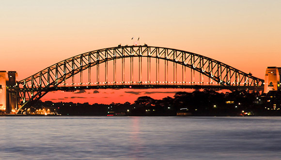
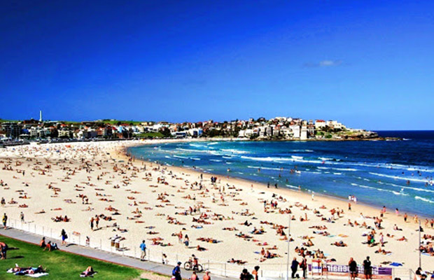
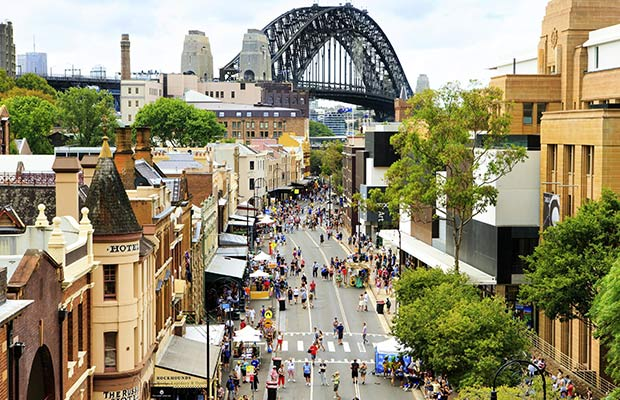
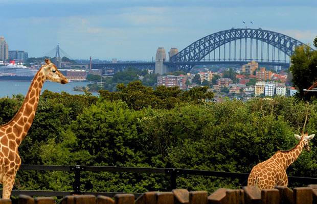
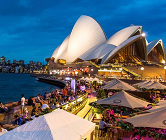
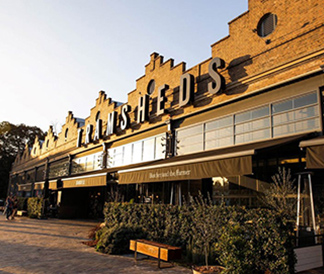
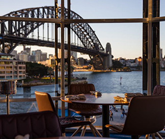

El 1er lugar para ver es la Ópera de Sidney, con su
característico techo de
velas
supuerpuestas que se ha convertido en el icono de la ciudad. Fue inaugurada en
1973, y es
Patrimonio de la Humanidad desde 2007, no sólo es uno de los edificios más
representativos
de la ciudad, sino que también es uno de los más famosos a nivel internacional a
causa de su
peculiar arquitectura.Dispone de carriles para peatones, para bicicletas, dos
vías de tren y
ocho carriles para coches.
Las opciones P/ conocerla son varias: se puede optar
por reservar una entrada,
visitar el
int. del auditorio o incluso tomar un refresco en
el ópera bar, donde se
puede disfrutar
de unas hermosas vistas.

Puente Sidney
El puente de la bahía de Sidney fue inaugurado en el 1932 y esta
situado en el
hermoso y
emblemático puerto de Sidney, y cuenta con una vista a las aguas azules que
hacen de ese
puerto un lugar espectacular. Los visitantes son libres de caminar
o andar en
bicicleta a
través de esta vasta estructura, pero reserve un pase para tener la oportunidad
de escalar
hasta la cumbre y disfrutar de una de las mejores vistas panorámicas de la
ciudad. Las
expediciones lo llevarán a lo a. de sus arcos antes de
alcanzar su pico, 134
metros,1.149
metros de longitud sobre el nivel del mar. No se requieren habilidades
especiales para
escalar, y hay varias opciones de visita al puentes, durante todo el día,
incluso en el atardecer y el amanecer.

Playa Bondi
La playa más famosa de Australia es un tramo curvado de arena dorada y olas de
color turquesa
pálido. La atracción de la playa, surfistas y los amantes de la playa, es uno de
los puntos
calientes favoritos de Sidney para tomar sol y ver a la gente. Las arenas de la
playa de
Bondi son un lugar popular para hacer clases de surf, voleibol de playa, yoga y
fiestas de
la comunidad. La playa está custodiada por una corriente de comercios,
restaurantes y
cafeterías para comer que siguen de relax para luego retomar la playa. Los
hermosos paseos
costeros le
conducirán desde Bondi en los acantilados junto al mar hasta las playas
vecinas.
Para llegar desde el ctro. de la ciudad hay
colectivos que van directo a la
playa o tambien
se puede ir hasta la estación de tren.

Barrio Rocks
El barrio más antiguo de la ciudad, con sus edificio georgiano de
piedras
arenisca,
callejones estrechos, bares históricos y mercados reciclados,es el barrio de
Rocks
,uno de
los lugares con más historia y populares de Sidney. Situado lejos
del puerto,
fue una de las
primeras partes de la ciudad en desarrollarse. Anteriormente fue una zona
abandonada, hoy
en día es un barrio central tanto para los habitantes como para el turismo. Se
pueden
encontrar bares más antiguos de Sidney, un mercado de fin de semana especial de
artesanías,
el observatorio de Sidney, museo de artes contemporáneo, y una variedad de
comercios.
Algunos de los mejores restaurantes se encuentra aquí. La mejor manera para
tener una idea
del barrio de Rocks es recorrer sus calles estrechas empedradas de 200 años de
antiguedad.

Zoologico
Taronga, es uno de los zoológicos más importantes del mundo, hogar de miles de
animales
fascinantes, incluidos a los autóctonos australianos, como los koalas, los
canguros y el
ornitorrinco.Se encuentra ubicado en un lugar privilegiado de Sídney, sobre la
orilla de la
bahía, con vistas panorámicas del Opera Sidney, el puente, la ciudad y la
costa. Una de las opciones más interesantes para hacer turismo en Sídney es
dormir en
el zoológico
una experiencia única, que permite a los visitantes disfrutar de una
agradable
noche en la
costa este de la ciudad.Con su entrada, obtendrá acceso al
zoológico y al
teleférico, que le
ofrece la oportunidad de ver el recinto de los animales desde arriba y de
disfrutar de unas
vistas espectaculares.
Lugares para comer en Sidney

Opera Bar
Situado justo al borde de las aguas, Opera Bar es a menudo descrito como el mejor jardín de
cerveza del mundo. Déjate llevar por las vistas panorámicas de la Ópera de Sidney. Ya sea
desayuno, un almuerzo lento, una cena previa al espectáculo o simplemente un cóctel; Opera
Bar es realmente perfecto para cualquier ocasión.

Muelle
Es uno de los restaurantes más famosos del país,el chef ejecutivo es Peter Gilmore.
La reestructuración del Muelle ha dado la bienvenida a un espacio orgánico que refleja la
cocina inspirada en la naturaleza de Peter Gilmore. Las texturas y colores trae nueva vida y
una vibración que abraza el lugar del restaurante.

Tramsheds sidney
Tramsheds es el destino perfecto para conectarse cómodamente, en cualquier momento del día o
de la noche, durante la semana y los fines de semana. El recinto ofrece algo para todos los
gustos, ocasiones y presupuestos, es el tipo de lugar donde siempre hay experiencias
nuevas y muchas emocionantes para saborear.